Workshop integrates with Global Branching so you can develop modules and their configurations safely and in isolation. This page covers how to work with Workshop modules on branches, including adding resources to a branch, resource protection and approvals, and rebasing and conflict resolution.
For general information on Global Branching concepts and workflows, refer to the Global Branching documentation.
To add a Workshop module to a branch, use the branch selector to switch to that branch, open the module, then save any changes. The module is now a resource on the branch.
If your Workshop module contains non-Workshop elements for which Global Branching is not available, such as Quiver dashboards, these elements will not be modifiable on a branch.
When on the main branch, protected Workshop modules show a Save to new branch option instead of Save and publish, requiring all changes to be made on a branch rather than directly to main.
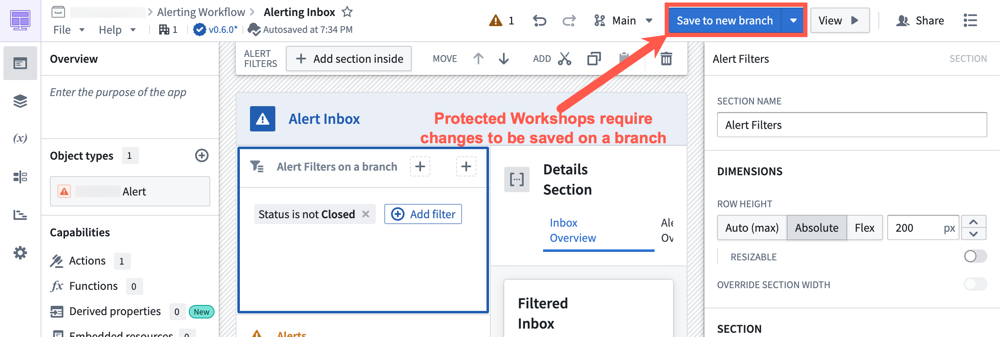
Select Save to new branch to open the new-branch dialog. Name the branch and select an ontology for it.
When you are ready to merge your changes to main, create a proposal.
After a proposal is created, assigned reviewers are notified to review the changes. Navigating to the branched version of the Workshop module directs reviewers to the Changelog tab in Workshop.
Within the Changelog tab, reviewers can see the changes made to the module. Reviewers can then approve or reject the change by selecting the appropriate Approve or Reject button on the left panel in the Review proposed changes section.
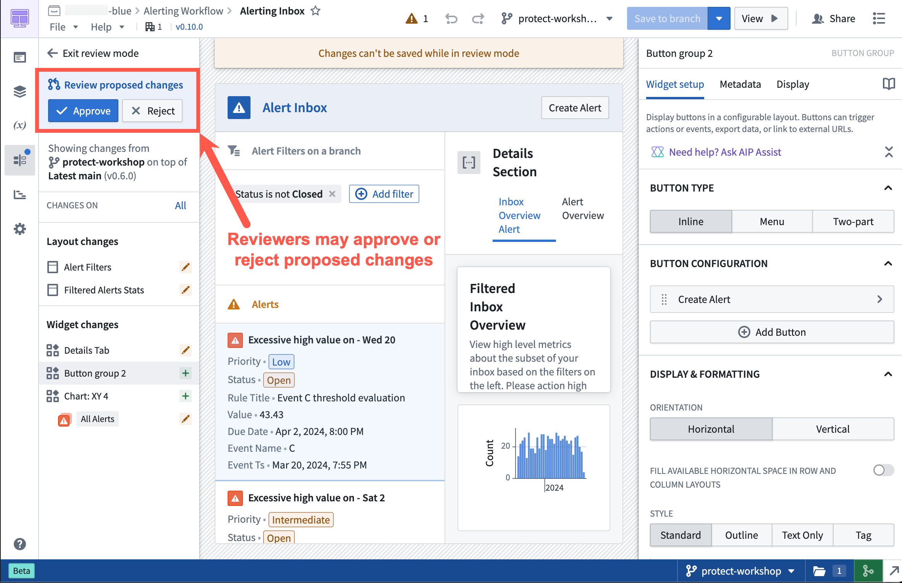
Workshop rebasing enables multiple builders to edit a single module at the same time without needing to worry about overriding each other's changes.
Before you merge Workshop changes on a branch into main, you must rebase if a change occurred on main after the module was saved on a branch.
The rebasing user interface uses the Changelog panel to depict all changes made in the module.
If a rebase is required before merging, the Changelog panel displays a notification dot. Select the panel to show an option that begins the rebase.
:::callout{theme="warning" title="Save before rebasing"} Unsaved Workshop edits are not preserved through a rebase. Save your changes to the branch before starting the rebase; any in-progress edits that have not been saved will be lost. :::
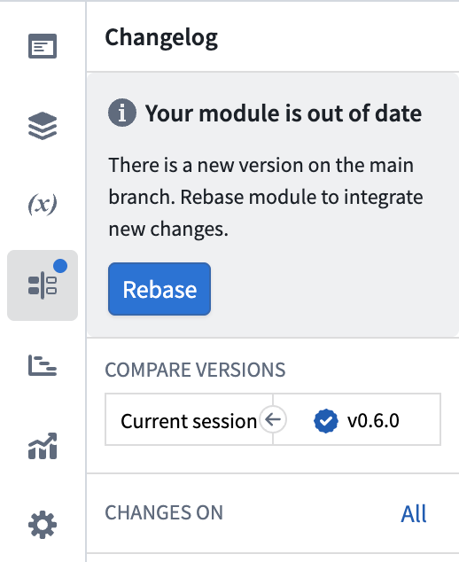
Rebasing updates your branch by applying its changes on top of the latest main version. The main branch is not modified until your branch is merged.
Select Rebase, then choose Start rebasing to accept non-conflicting changes from main automatically and review conflicting changes manually.
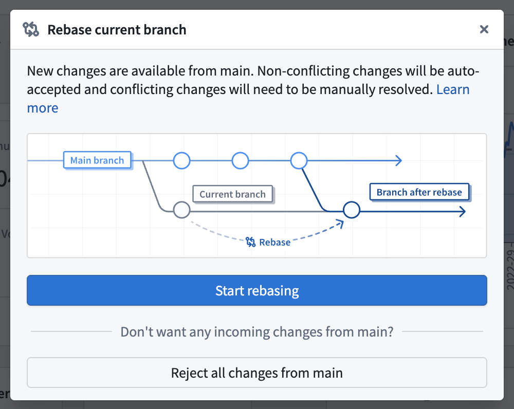
To preserve the branch version of the entire module without accepting any changes from main, select Reject all changes from main. Use this option only when the branch should replace the version on main. When you merge the branch, its module configuration overrides the changes on main.
After initiating a rebase, if the sidebar does not show any explicit conflicts, Workshop automatically accepts the non-conflicting changes from main and combines them with your branch's changes. In this case:
main.A change is marked as a merge conflict when it is edited on both main and the branch.
Workshop merges changes to separate configuration fields automatically. For example, if main changes a section title and your branch changes the section color, Workshop preserves both changes. A change is flagged as a merge conflict when the same configuration field, variable definition, or layout position was edited on both main and your branch. For conflicting changes, you must choose a version or manually combine the changes.
Common examples of merge conflicts include:
main and your branch.main and edited on the branch.A to B on main and from A to C on your branch.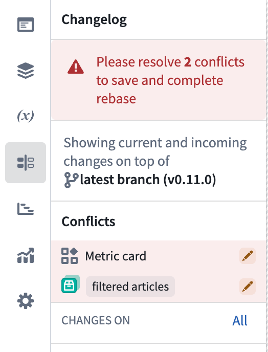
To resolve a merge conflict, switch between three states to test how each option affects the module in real time:
main.main with changes from your branch.:::callout{theme="neutral" title="Support for granular visual changes"} Granular visual changes only appear for widgets, sections, and variables. Layout changes and global module-level changes are only displayed in the Changelog panel. :::
Workshop highlights granular changes in the widget and section configuration panels. The change icon indicates how a configuration differs between main and your branch:
main and your branch.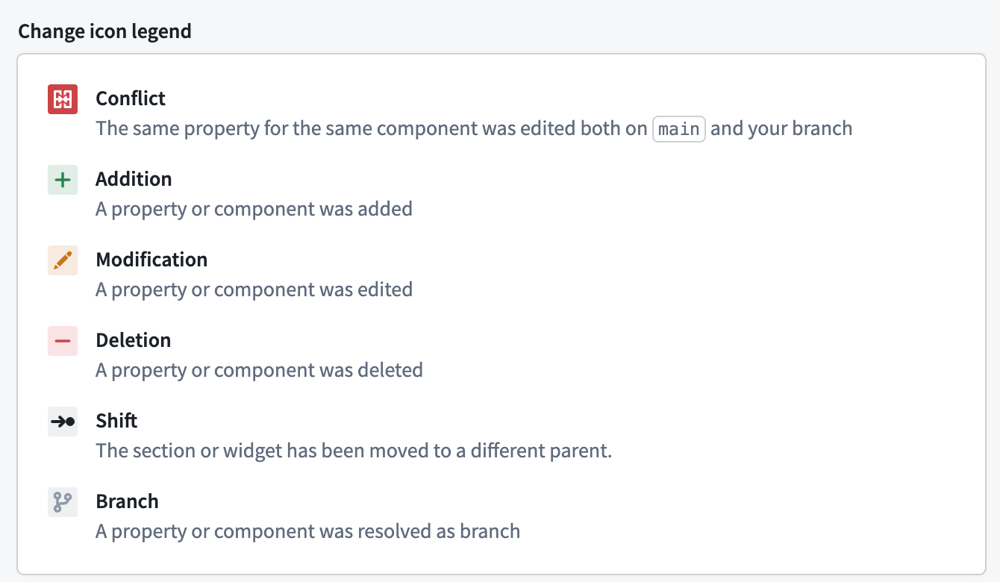
Select a change icon in the configuration panel to compare the configuration on main with the configuration on your branch. This will expand a side-by-side comparison that will show additional details.
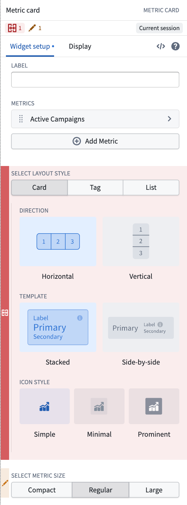
In the side-by-side comparison, select Main branch or Your branch to test that configuration in the module. You can then edit the configuration directly to combine changes from both branches. After you choose or create the configuration to keep, select Resolve.
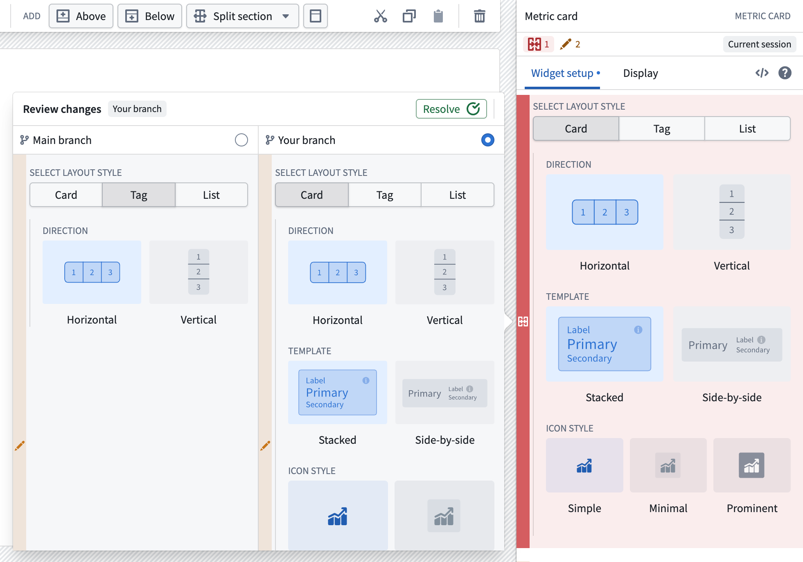
For a variable conflict, select the variable in the Changelog panel to open its editor and a side-by-side comparison. Review the complete variable definition and settings for Main branch and Your branch. You can expand the comparison if you need more space.
Select either version to test its effect on the module, or edit the variable definition to combine changes from both branches. Then select Resolve.
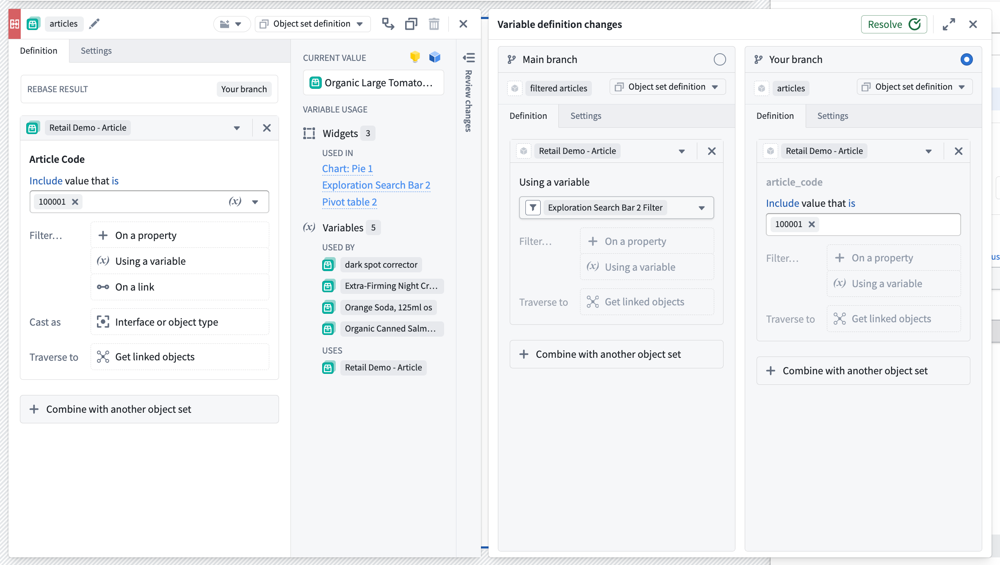
When you are satisfied with how your module looks and have resolved any merge conflicts, save the module to finish rebasing.
After this is complete, you can safely merge your Workshop changes from your branch into main.
In the example below, a merge conflict occurs in a metric card widget during a rebase. The current branch adds a metric named Fiscal Week Revenue, while main adds a metric named Fiscal Week Sales Volume.
Current branch:
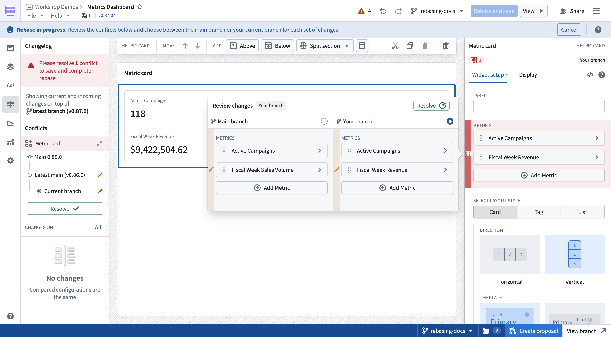
Main:
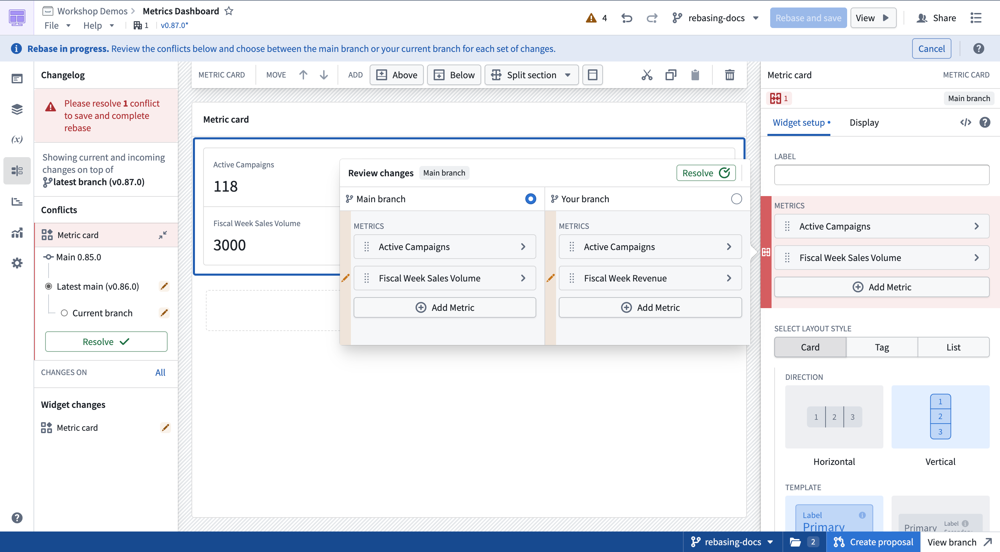
To keep both metrics, first select Main branch, then manually add the Fiscal Week Revenue metric. The comparison changes to Current session and shows the combined configuration. Select Resolve to keep it.
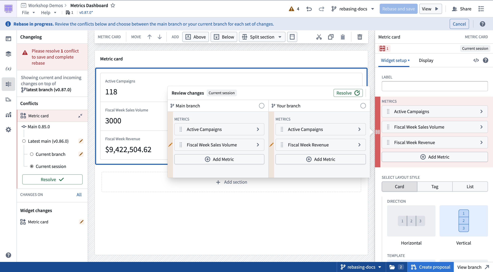